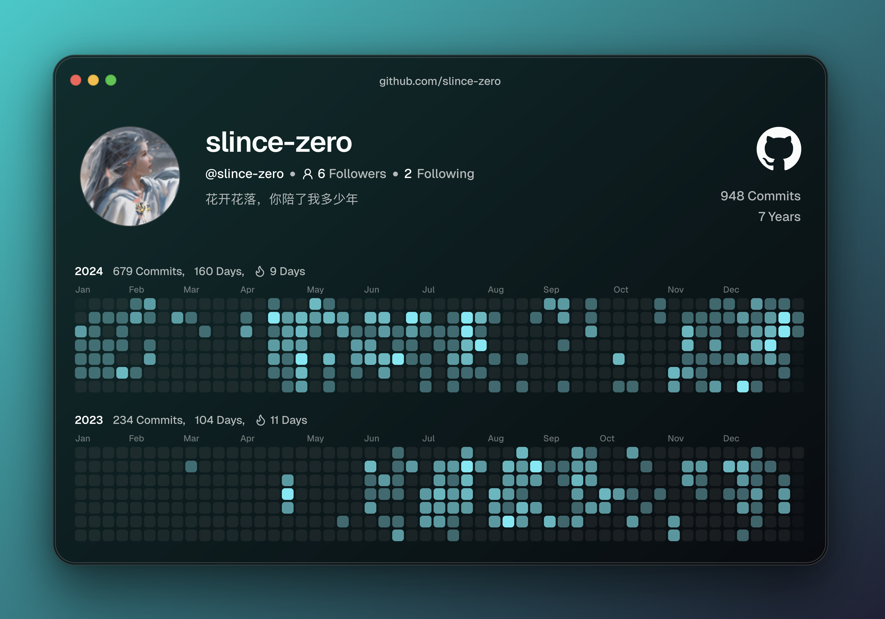

Today is the last day of the year, and as usual, it’s time for my annual review.
Last year, after receiving my graduate school exam results, I decided to look for work. I ended up at a traditional company doing frontend development. My daily tasks mainly involved modifying JSP pages. Though the pay wasn’t much, it was relaxed. During my free time, I studied modern frontend development concepts. I’m still learning, and the more I learn, the more I realize how much technical debt I have to catch up on.
At the beginning of the year, I was learning React. During this period, I discovered various open-source projects, UI component libraries, and learned to use Tailwind CSS, using these tech stacks to create many small components.
In April, I started an open-source project called IMaker using React as the frontend framework and NEXT UI as the UI component library. It has now garnered over 200 stars on GitHub.
By May, IMaker had gained over 100 stars, and I started sending out resumes and interviewing at new companies. A few companies left deep impressions. One was a legal examination preparation company with a 10/10/6 work schedule. The first interviewer there taught me a lot, helping me understand that learning technology isn’t just about frameworks but about understanding what’s behind them.
Another was a military industry company that I really liked. I remember the interview day was extremely hot. There were just two rounds - a technical interview that wasn’t too difficult, and an HR interview the same afternoon. They asked some questions and addressed my concerns, then told me to wait for their response. That was the end of it. Later, when I tried messaging the HR person on WeChat, they didn’t respond.
After June, as the weather got hotter, I became more anxious. I started applying for positions in other cities, sending resumes via email to company websites and forums where seniors had left their contact information. There were some interesting experiences during this period.
During this time, I attended Microsoft’s AI Day in Beijing, where I met many experts and learned about current industry trends and future directions. My main goal was still to find opportunities, and I submitted resumes to some companies, but wasn’t successful. The feedback was mostly that I lacked experience - they wanted more seasoned professionals.
I remember applying to a company headquartered in Beijing with a branch in Qingdao that worked on operating systems and hardware. After I sent my email, the HR response left a lasting impression. They said, “As you mentioned, your resume isn’t impressive, and your work experience and educational background don’t meet our company’s average standards…” This hit me hard at the time. Previously, I might have accepted that my education and work experience were ordinary and didn’t meet their standards. But now, I think it’s okay - take it slow, and the right opportunity will come.
However, at that point, my mindset was completely shattered. I couldn’t focus on learning, couldn’t settle down, and didn’t know what I was doing or should be doing. I worried about my lack of practical project experience, non-standard development practices, and the many things I didn’t know. I kept wondering what to do, feeling stuck in a learning bottleneck with no clear path forward.
My girlfriend advised me to be patient, stay at my current company, and properly learn what I needed to learn, but I didn’t listen.
In July, I had a sudden idea to try overseas opportunities, but I found the options were limited, mainly because I only had a year of experience, and most positions required three, five, or even ten years. While browsing online, I found GitHub founder’s email address. Taking a chance, I wrote him an email expressing my confusion about my future and difficulty finding new opportunities. Surprisingly, he replied, suggesting I get involved in open source and become a solid contributor to some projects. He mentioned this might be a way to bypass traditional interviews abroad.
This gave me new inspiration. GitHub is truly a treasure trove - I later realized that you can find almost anything you want to learn there.
Later, I received a message from another senior developer whose project I found on GitHub. After I emailed them, they advised me not to limit myself to technology, but to think from a product perspective - to create and deploy a product from scratch, as this process teaches you many things. They encouraged me not to give up and to keep persisting.
I’m truly grateful to all these seniors I met through the internet!
Later, I received an offer from a domestic mind-mapping company in Shenzhen. After saying goodbye to my friends, I boarded a flight to Shenzhen in mid-August, thinking this was a new beginning heading in a good direction…
After completing various onboarding procedures, I started developing features immediately, with no time to familiarize myself with the codebase. Since my previous employer wasn’t focused on modern frontend development, some of my self-taught knowledge wasn’t sufficient, which made me nervous. Fortunately, I managed by asking senior colleagues for help and studying after returning to my rental apartment.
Later, due to my knowledge gaps, I had some communication issues with the remote team members (I was the only one working on-site), which caused some development delays.
In September, Shenzhen’s weather was incredibly humid and hot, which was truly unbearable. Add to that the flying cockroaches, which were terrifying. Combined with development issues at the new company and the fact that I didn’t know anyone in Shenzhen, I would cry alone in my rental apartment at night.
In October, my girlfriend came to visit me in Shenzhen, which made me very happy. I showed her around various attractions, and at that point, everything seemed worth it. However, just when I thought things were on track, the company informed me that I hadn’t passed my probation period. Their reason was that my earlier development issues had delayed other team members’ work, though I recall only having such problems in the first two weeks, with only minor code review issues afterward. But they wouldn’t let me defend myself. My last day was set for October 30th, which happened to be my birthday. Interestingly, I received a birthday JD gift card that day.
A colleague who sat next to me expressed regret and chatted with me, giving some learning advice before I left this company where I’d spent less than three months. After seeing off my girlfriend, I was alone in my rental apartment, falling back into self-doubt. I decided to leave Shenzhen since I had come there specifically for this company. By late November, I had returned to my hometown.
One thing that really bothered me was that the Shenzhen company made me sign a non-compete agreement before leaving. I didn’t understand this well - usually, these are for long-term employees, so why require it from a new hire? And there was no compensation; they just showed me the door.
Back home, I met with old friends who had all found their paths in life. It felt like I was back at square one. By then it was December, and besides sending out resumes, I spent my time self-studying. Though my time at the Shenzhen company was brief, it gave me a basic framework for understanding products, and now it’s just a matter of filling in the skill gaps.
However, the year-end hiring situation doesn’t look promising, with barely any interviews. I’m unsure about my next steps.
To summarize this year’s activities: working on open-source projects, joining a new company, and becoming unemployed.
Analyzing this year’s events reveals my biggest problem: impatience! I act without thinking things through, without considering consequences, and when things get critical, I’m left helpless with no backup plan.
Now I remember what my girlfriend said, but as an adult, I have to bear the consequences of my actions.
Now that I’ve calmed down and reflected on this year’s events, I realize I didn’t think some things through properly. I don’t know if this counts as personal growth, but this experience has taught me a lot, especially the importance of staying calm.
Looking back at last year’s summary, I executed most of my learning goals well, but failed to “stay calm.” I can’t continue like this this year - it’s time to seriously consider my future path.
Here’s my GitHub contribution graph for the year - I’ll keep working hard next year!!

Finally, I wish everyone can do what they love in the new year, and may my girlfriend and parents stay healthy.